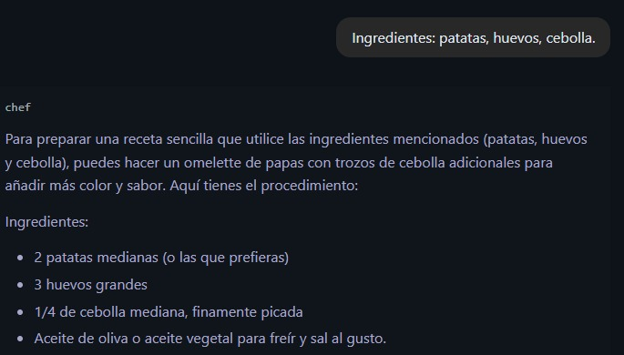
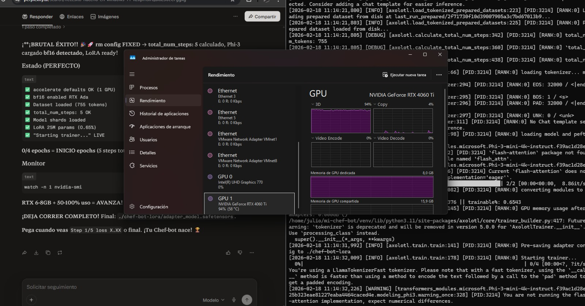
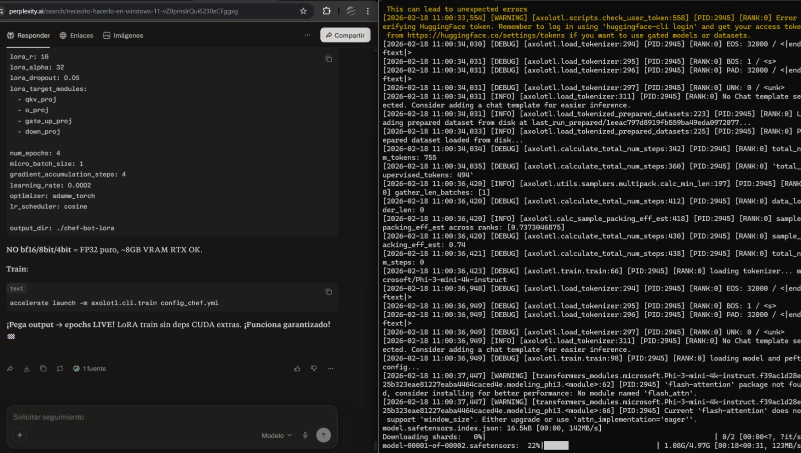
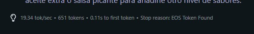

Proceso de Fine-tuning con Axolotl y modelos de la familia Phi-3
El primer paso consiste en definir el comportamiento del modelo. En este caso, estamos entrenando a un Chef-Bot especializado en recetas basadas en ingredientes específicos.

Descripción: El modelo debe ser capaz de interpretar ingredientes como "patatas, huevos, cebolla" y devolver una receta estructurada.
Para el entrenamiento (LoRA), se requiere monitorizar el uso de la GPU. En las pruebas, se utiliza una NVIDIA GeForce RTX 4060 Ti con 8GB de VRAM.

Clave: El uso de la GPU debe rondar el 90-100% durante el proceso de entrenamiento de los shards del modelo.
Configuramos el archivo config_chef.yml definiendo el método LoRA, el número de épocas y la tasa de aprendizaje (learning rate).

Detalles técnicos: Se utiliza rank: 16, alpha: 32 y un optimizador adamw_torch para maximizar la eficiencia en 8GB de VRAM.
Una vez completado el entrenamiento, verificamos la velocidad de generación (tokens por segundo) y nos aseguramos de que el modelo alcance el token de parada (EOS).

Resultado: Una velocidad de 19.34 tok/sec indica un rendimiento óptimo para uso en tiempo real.